◎ 筑波山で50MHz有志による忘年会開催(17.Dec.2005)
2005年12月17日(土)、茨城県つくば市の筑波山グランドホテルに於いてJA1,3,7,8,9の各エリアからの50MHz有志の参加による忘年会が開催された。
サイクル23のコンデションも下降したシーズンオフの忘年会で、今回は泊りがけの"のんびり"会合となった。
一行は翌日、茨城県内のつくば市、かすみがうら市の"サテライト・シャック"を見学後、解散。
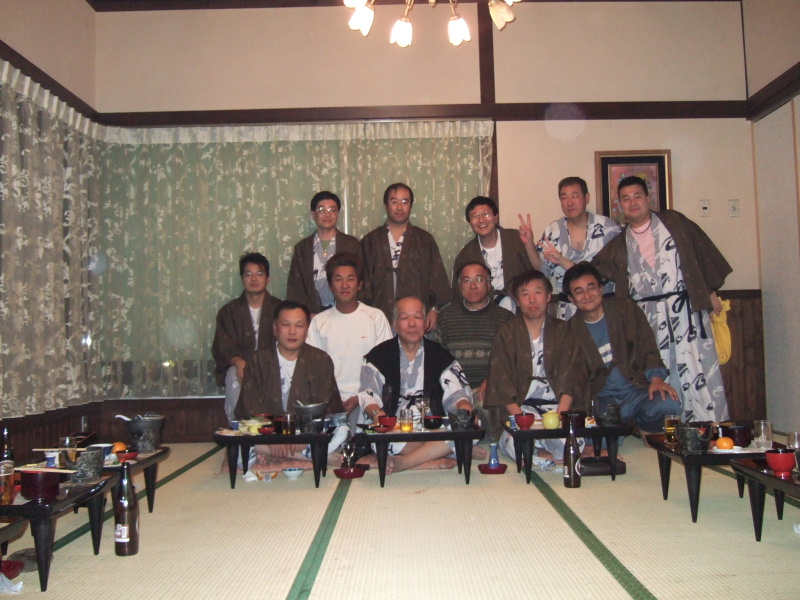
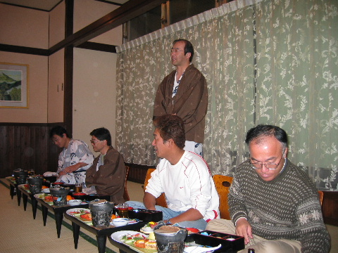
今回の参加者/幹事役の宮本(JN1JFC)さんの挨拶
(左から前列)JA9SSB.JJ3AZA.JA1RJU.JA7WSZ.JA1UIU.JR3HED
(後列)JQ1DPP.JF1IRW.JN1JFC.JI1WTF.JA8GVQ.JJ1CKDの各局
◎ SM7FJE Bo Nilssonさん来日(19.Oct.2005)
DXシーズンのF2や夏場のEsで強力な信号を送り込んできてJAの50MHzマンには御馴染みのSwedenのSM7FJE・Bo Nilssonさんが2005年10月18日に来日した。
今回は仕事での来日で東京には2泊しただけで10/20日に離日するという慌ただしい日程だった。
来日前にmailで"10/19日に飲み会でも..."と連絡があり、
急遽JA1エリアの有志がこの日秋葉原の居酒屋に集まり"歓迎の会"を催した。
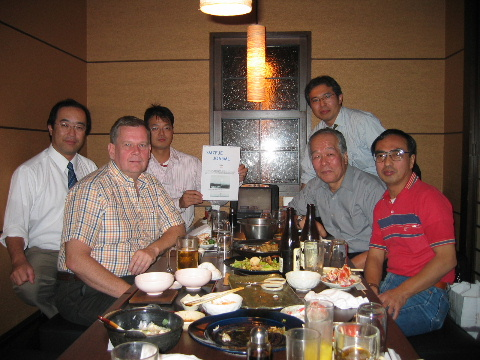
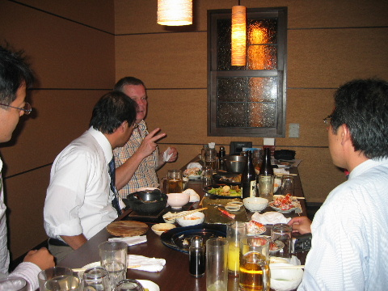
SM7FJE・BoはM2の4X9el(12m boom length)アンテナを使い、父親のSM7AEDと供にアクティブに6mでQRVしていて現在DXCCは202をコンファームしている。
1999年に20年に1度という北欧には珍しい"ハリケーン"に遭遇、4X9elのアンテナはステーが切断タワーが根本から倒壊してしまい、
それ以降はM2の11elシングルでQRVしている。
近いうちにM2の4X11elを上げる予定で、イタリアから輸入する仰角可変ローテーターでEMEでのQSOにもトライするとの事。
夏場のEsでJAとのQSOにもトライしたいと張り切っているので来季は期待出来そう。
彼が住むSouth SwedenのQTHは周囲200-300Kmに高い山が無く50MHzには絶好のロケーションとか。
JAとの50MHzの伝搬はダイレクトの方向から聞こえてくる事は無く、SMに入感するJAは全て90度方向からのスキャッター(JAでは東南アジア方面からのスキャッター)の入感のため、
距離的には近いはずのJA8(北海道)とはまだQSOは出来ていないとの事だった。
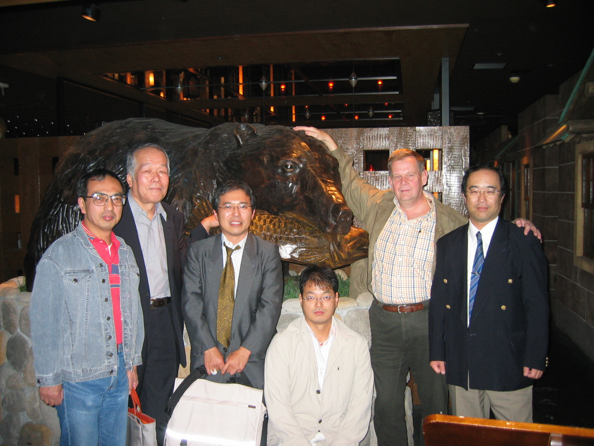
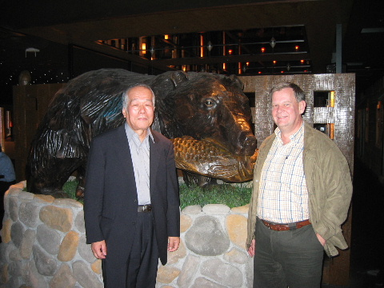
(L to R) JA1QYU JA1RJU JA1DXA JQ1DPP SM7FJE JN1JFC
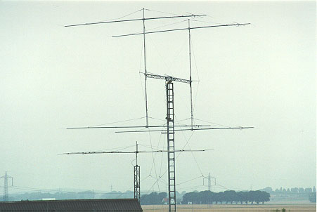

左は倒壊前のM2 4X9el / Home Page
SM7FJE JO65ML参照。
◎ JA1エリアで2005年暑気払いミーティング(07.Aug.2005)
2005年7月30日(土)、JA2、7エリアからの参加者も加えた6mの有志が、
東京・中央区銀座3丁目の沖縄料理店「ぱいかじ」で暑気払いのミーティングを開催した。
6mのF2のDXコンデションは完全に落ち込んで、アクティビティも急落しているこの時期ながら、
先ごろの中東やヨーロッパのEsマルチホップのオープンの話題等で盛り上がった。
今回は本格的な「沖縄料理店」でのミーティング開催に、
サイクル23全盛期に"沖縄移動"でDXを楽しませてもらったメンバーには久しぶりに味わう"沖縄"に話も弾んでいた。
|
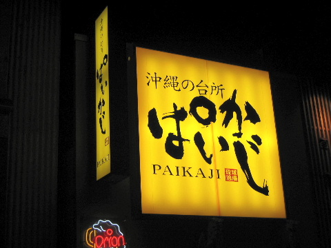
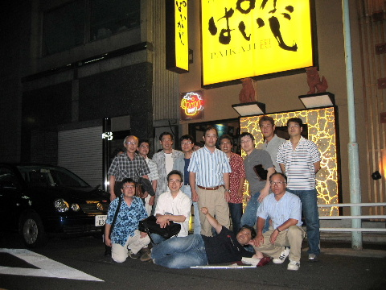
2005年暑気払いに「沖縄の台所 ぱいかじ」に集まった6mマン
◎ 第34回東北6SG/第34回VSG・第22回VCG全国大会合同ミーティング(12.Jul.2005)
2005年の第34回東北6SGミーティング・岩手大会は7月09-10日の両日、岩手県岩手郡安代町の新安比温泉で開催された。
今回はVSG/VCG全国大会も併設開催されることになったが、
事前の"PR不足"もあり1、2エリアから4局の新参加者を加えただけで総数では従来の6SG東北大会の規模だった。
昨年の秋田(横田)大会では当日にEsのマルチホップで中東、ヨーロッパ方面がオープンするという参加者には"不運"な状況だったが、
今年は両日ともに"静かな"6mのコンデションとなり"ひと安心"。
初日の懇親会、二次会の"飲み会"もこころおきなく深夜遅くまで続いた。
翌日のミーティングは午前9時から参加者全員の記念撮影で始まった。
最初の講演はJA1RJU(JA7JU)による「過去1年間の6mのコンデション」の解説、
続いてJR2HCBから「6mのDXCC 200完成までの軌跡」、休憩を挟んで「KH0/KH2K 6m EME DX-Pedition」の模様がJA1RJUから報告された。
恒例の"ジャンク交換会"に引き続き、今大会の岩手県の幹事(JH7BRY)から次回開催県に決まった宮城県の幹事(JA7MIT)に"6SG大会旗"が伝達され、
岩手大会は12:00時前に無事終了した。
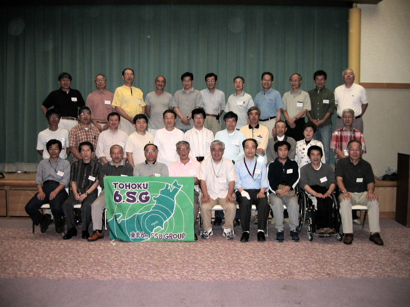
2005年 第34回東北6SG・第34回VSG/第20回VCG参加者
【 第34回東北6SG・第34回VSG/第20回VCG参加者 】
JA1BWD JR2HCB JA7JWF JH7JGM JI7NAI
JA1CJB JE2WLD JA7KHQ JH7MQU JI7WTK
JA1DWQ JE2WLD(XYL) JA7MIT JH7VEP JK7IKU
JA1RJU JA7AGL JA7QMH JH7XRZ JL7IWF
JE1FWO JA7AHK JA7QVI JR7AIW
JK1BEY JA7CSS JA7WSZ JR7XGL
JP1MQZ JA7EIQ JH7BRY JG7BBO
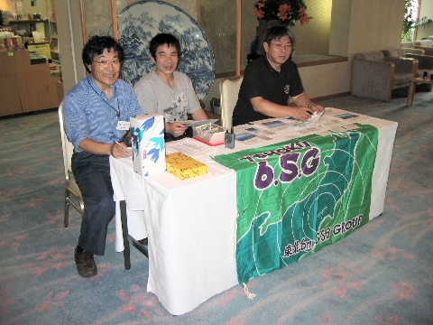
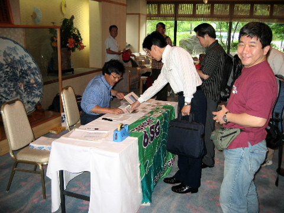
東北6SG/VSG/VCG・全国大会合同ミーティング・岩手大会の受付
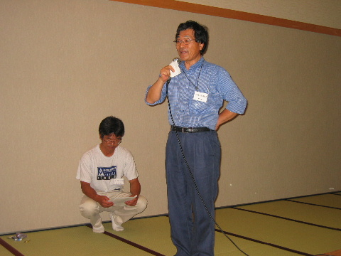
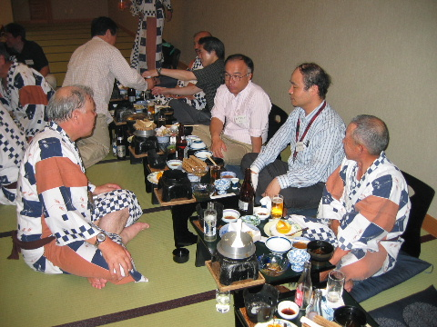
懇親会で歓迎の挨拶をするJH7XRZ・高橋さん/"地元の局"と懇談する2エリアから参加の皆さん
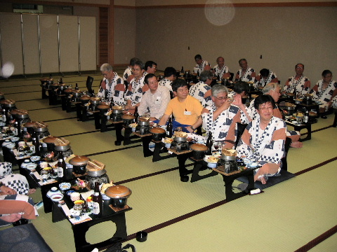
懇親会に参加の皆さん
【ミーティング】
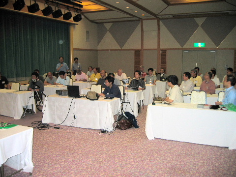
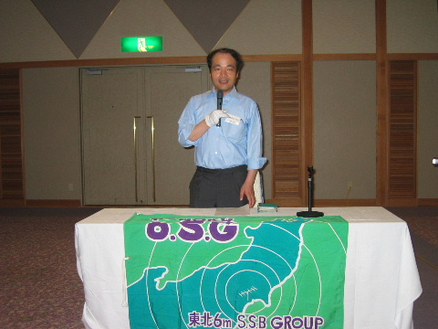
大会のメインは翌日のミーティング/講演するJR2HCB・水谷さん
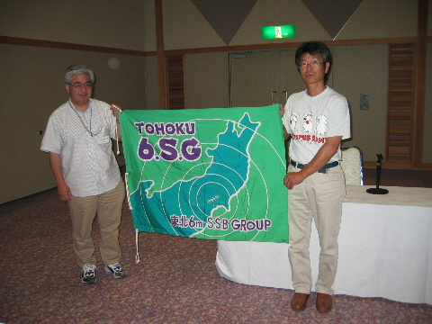
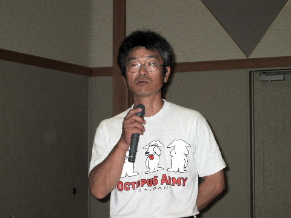
岩手県(JH7BRY=右)から宮城県(JA7MIT=左)に手渡される大会旗
大会終了で挨拶する幹事代表(JH7BRY)津志田さん
|
◎ 2005年JA1エリアの新年会(22.Jan.2005)
2005年1月22日(土)東京・御徒町で6mの有志が集まり新年会を開催。
サイクル23も下降線をたどり6mのDXのコンデションは完全に落ち込んでアクティビティも急落して話題の少ないこの時期ながら、
昨年1月に許可された6mのEMEチャレンジの成果や、サイクル23のDXオープンやDX-Peditionの話題などで盛り上がった。
JA1DXE JA1PVI JA1RJU JH1WHS JF1UMK JI1CQA JI1DMH JI1JKW
JI1WTF JJ1CKD JN1JFC JO1PSX JQ1DPP JJ3AZA JR3HED JA8GVQ
|